Harry Potter
A 12-year-old British wizard famous for surviving his parents'
murder at the hands of the evil wizard Lord Voldemort as an
infant, who now enters his second year at Hogwarts School of
Witchcraft and Wizardry. In this book, it is introduced that Harry
knows Parseltongue, a language used to talk with snakes. To defeat
the basilisk, Harry summons the Sword of Godric Gryffindor from
the Sorting Hat supplied by Dumbledore's pet phoenix, Fawkes.
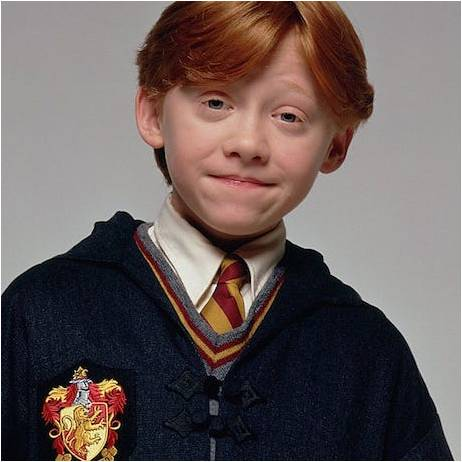
Ron Weasley
He is Harry's age and Rowling describes him as the ultimate best
friend "always there when you need him." He is freckled,
red-haired and quite tall. He grew up in a fairly large pure-blood
family as the sixth born of seven children. Although his family is
quite poor, they still live comfortably and happily.
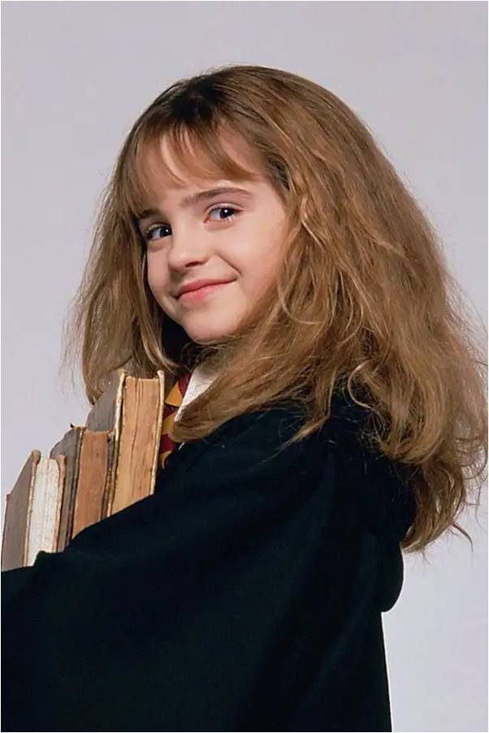
Hermione Granger
She is the daughter of an all-Muggle family, is a bossy girl who
has apparently memorised most of the textbooks before the start of
term. Rowling described Hermione as a "very logical, upright and
good" character with "a lot of insecurity and a great fear of
failure beneath her swottiness". Despite her nagging efforts to
keep Harry and Ron out of trouble, she becomes a close friend of
the two boys after they save her from a troll and her magical and
analytical skills play an important role in finding the
Philosopher's Stone. She has bushy brown hair and rather large
front teeth. She helped Harry and Ron by making the Polyjuice
portion and by providing the clue of basilisk.
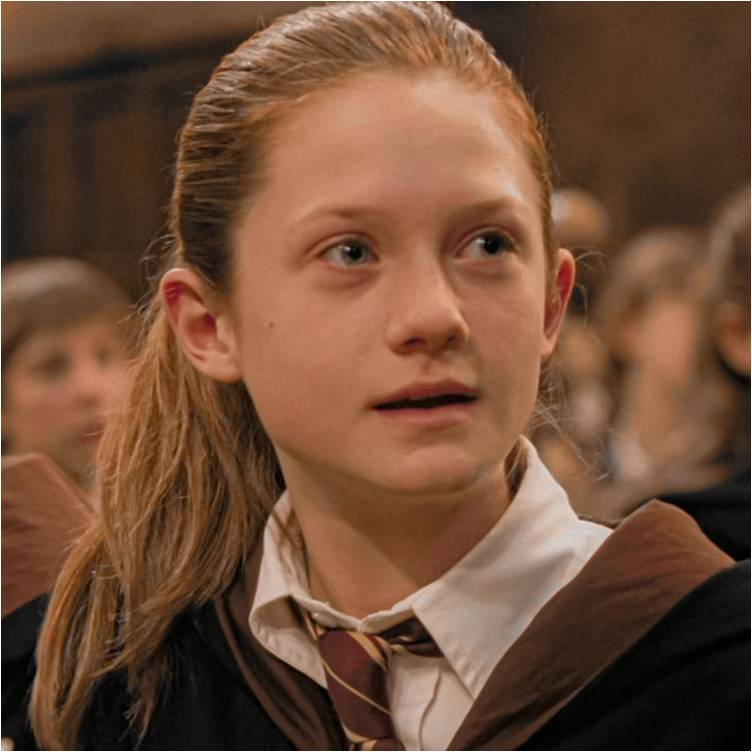
Ginny Weasley
Ginny is a first-year student in Chamber of Secrets, where she
develops a crush on Harry and is sorted into Gryffindor. During
the climax of the story, it is revealed that she opened the
Chamber of Secrets, and is attacking Muggle-born students while
being possessed by Tom Riddle's old school diary. Lucius Malfoy
had slipped the diary into Ginny's cauldron in Flourish and Blotts
prior to the term.
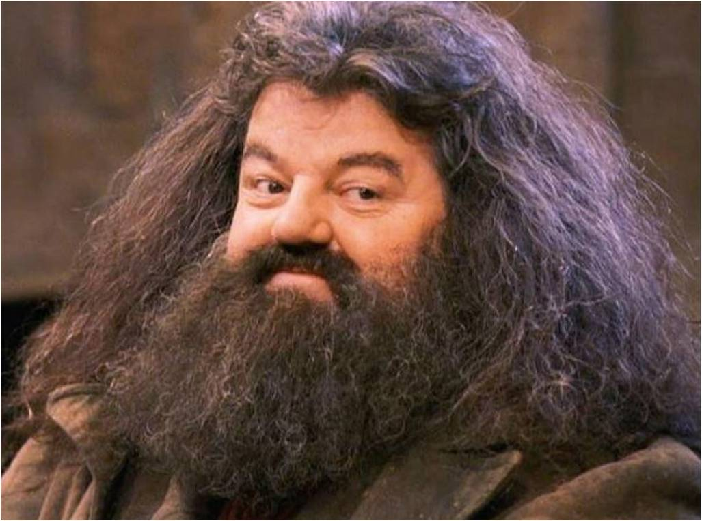
Rubeus Hagrid
He is a half-giant nearly 12 feet (3.7 m) tall, with tangled black
hair and beard, was expelled from Hogwarts and his wand was
snapped in half (resulting in him never to use a wand again),
however Professor Dumbledore let him stay on as the school's
gamekeeper, a job which enables him to give lavish affection, care
and even pet names (such as Norbert the dragon) on even the most
dangerous of magical creatures. Hagrid is fiercely loyal to
Dumbledore and quickly becomes a close friend of Harry, Ron and,
later, Hermione, but his carelessness makes him unreliable.
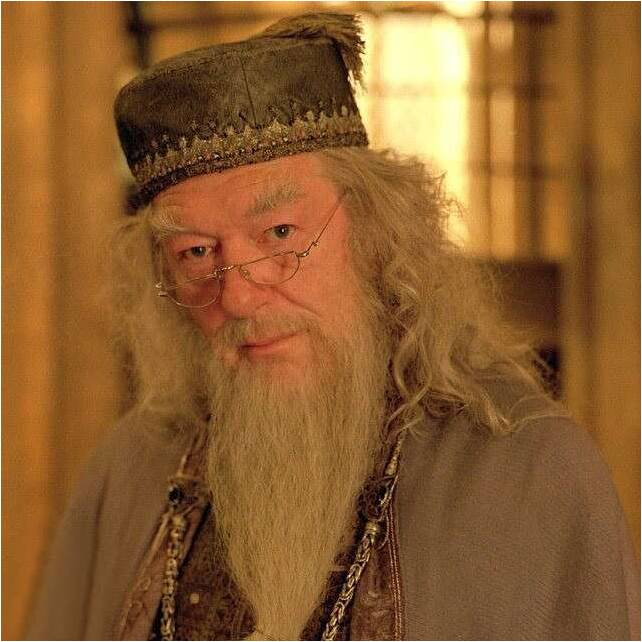
Professor Albus Percival Wulfric Brian Dumbledore
He is a tall, thin man who wears half-moon spectacles and has
silver hair and a beard that tucks into his belt, is the
headmaster of Hogwarts, and thought to be the only wizard
Voldemort fears. Dumbledore, while renowned for his achievements
in magic, shrugs off praise, though he is aware of his own
brilliance. Rowling described him as the "epitome of goodness".
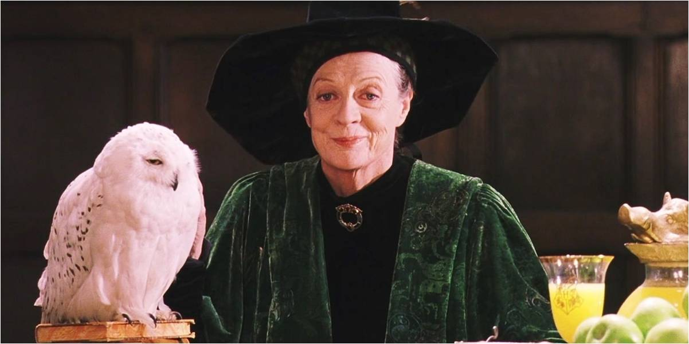
Professor Minerva McGonagall
She is a tall, severe-looking woman with black hair tied in a
tight bun and teaches Transfiguration. She is Deputy Headmistress,
and Head of Gryffindor House. McGonagall is considered to be a
formidable witch who is skilled in many forms of magic, notably
transfiguration and spell-casting. She is able to perform certain
magic without casting spells or sometimes without the use of a
wand. McGonagall is a registered Animagus and can transform
herself into a tabby cat at will. McGonagall was always held in
high respect by her peers and students at Hogwarts and commanded a
position second only to Dumbledore.
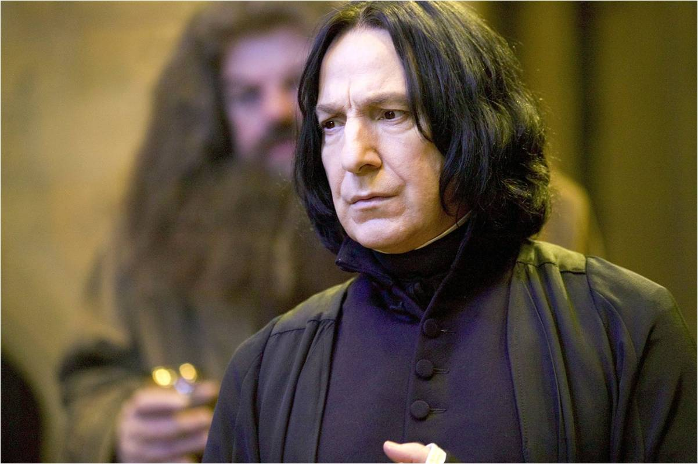
Professor Severus Snape
He has a hooked nose, sallow complexion and greasy black hair,
teaches Potions, but would prefer to teach Defence Against the
Dark Arts. Snape favours pupils in Slytherin, his own House and
seizes every opportunity to humiliate others, especially Harry.
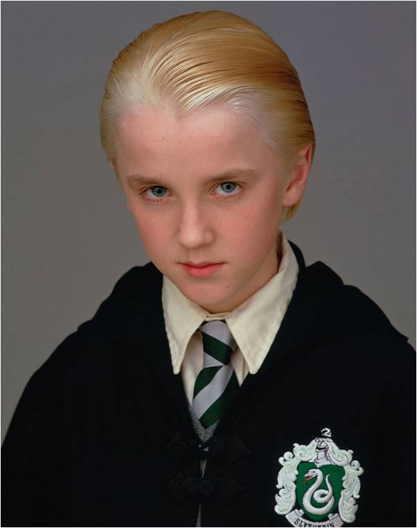
Draco Malfoy
He is a slim, pale boy who speaks in a bored drawl. He is arrogant
about his skill in Quidditch, and despises anyone who is not a
pure-blood wizard and wizards who do not share his views. His
parents had supported Voldemort, but changed sides after the dark
wizard's disappearance, claiming they had been bewitched. Draco
avoids direct confrontations and tries to get Harry and his
friends into trouble.
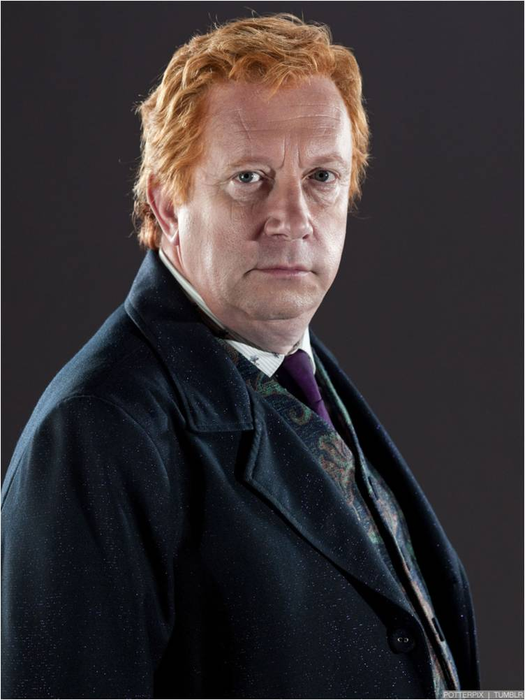
Arthur Weasley
Arthur Weasley is the patriarch of the Weasleys, a family of
wizards who are considered "blood traitors" by Death Eaters for
their interest in the Muggle world. He is married to Molly
Weasley, with whom he has seven children, including Ron, Harry's
best friend. During his time at Hogwarts, Arthur belonged to the
house of Gryffindor. Arthur is described as being tall and thin,
and as having a receding hairline and horn-rimmed glasses. An
affable, light-hearted man, he tends not to be the authority
figure in the family; his wife Molly handles that area. Arthur
works for the Ministry of Magic, initially in the Misuse of Muggle
Artefacts Office. He is obsessed with learning about Muggle
customs and inventions and owns a large collection of mostly
Muggle used items. His department lacks funding, and his salary is
only just able to provide for a vast family, leaving his family
finances precarious.
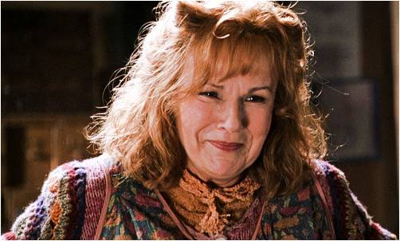
Molly Weasley
She is the wife of Arthur Weasley and the matriarch of the Weasley
family. She is the mother of seven children, including Ron
Weasley, who becomes Harry Potter's best friend. Molly is born
into the pure-blood Prewett family, being the sister of Gideon and
Fabian Prewett.
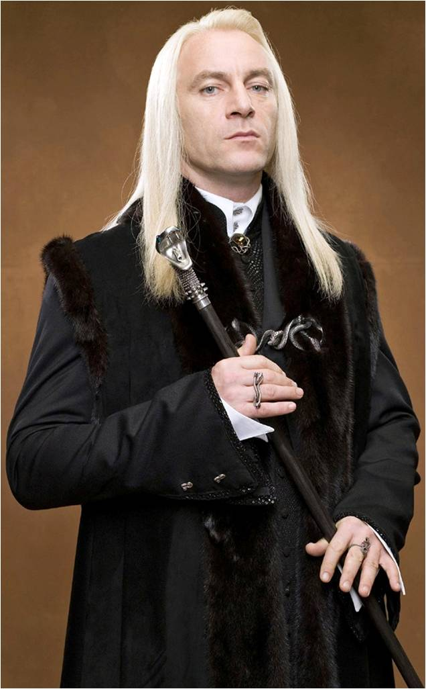
Lucius Malfoy
Draco's father and a former Hogwarts pupil of Slytherin House who
now works as a school governor at Hogwarts. Isaacs gave Lucius a
whiny tone of voice based on that of the Child Catcher of Chitty
Chitty Bang Bang, whose voice had resonated with Isaacs throughout
his childhood for the character scaring him.
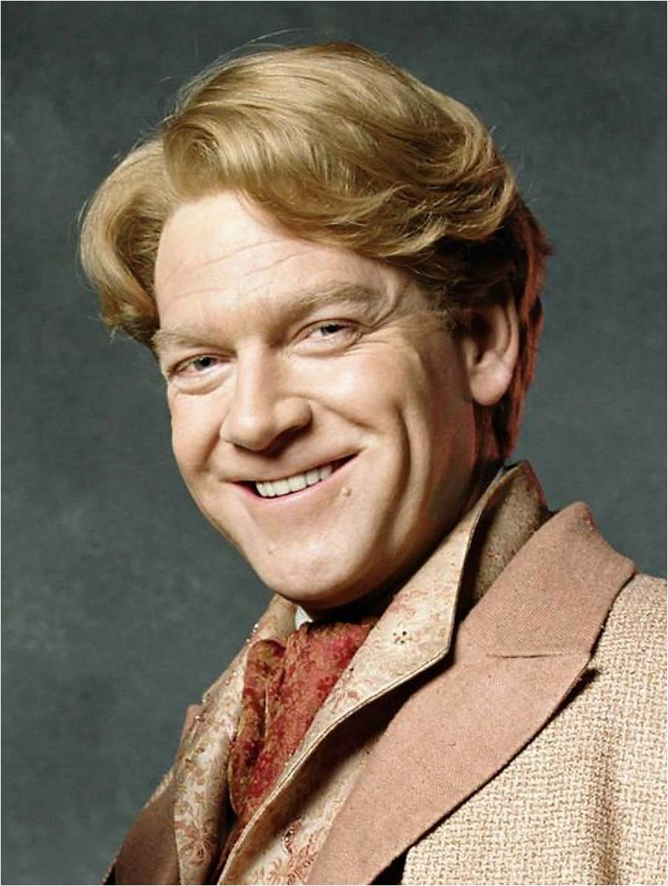
Gilderoy Lockhart
Gilderoy Lockhart is a popular author and wizarding celebrity who
has written many books about his adventures encountering dark
creatures, and is the Defence Against the Dark Arts instructor for
Chamber of Secrets. He is unpopular with most of the staff,
particularly Snape. He is greatly admired by many others,
particularly women (including Hermione and the Weasley mother
Molly Weasley) who find him attractive. Harry dislikes Lockhart
for a number of reasons: his arrogance, his belief that Harry flew
to Hogwarts in Mr. Weasley's car to seek further attention, his
penchant for handing out signed photos of himself, and the trouble
he has with simple magic such as healing Harry's broken arm (he
accidentally vanishes Harry's arm bones instead). Lockhart is
exposed as a charlatan and a coward when he attempts to avoid
entering the Chamber of Secrets by revealing to Harry and Ron that
he never performed the amazing feats documented in his books,
instead passing off the experiences of other witches and wizards
as his own and erasing their memories to prevent them from
revealing the truth. He attempts to cast a Memory Charm on Harry
and Ron using Ron's damaged wand, but the spell backfires and
leaves him with near-total amnesia.
Other members of staff include: the dumpy Herbology teacher
and Head of Hufflepuff House Professor Sprout, Professor Flitwick,
the tiny and excitable Charms teacher and Head of Ravenclaw House,
the soporific History of Magic teacher, Professor Binns, a ghost who
does not seem to have noticed his own death, and Madam Hooch, the
Quidditch coach, who is strict, but a considerate and methodical
teacher. The poltergeist Peeves wanders around the castle causing
trouble wherever he can.
In the book, Rowling introduces an
eclectic cast of characters. The first character to be introduced is
Vernon Dursley, Harry's uncle. Most of the actions centre on the
eponymous hero Harry Potter, an orphan who escapes his miserable
childhood with the Dursley family. Rowling imagined him as a
"scrawny, black-haired, bespectacled boy who didn't know he was a
wizard" and says she transferred part of her pain about losing her
mother to him. During the book, Harry makes two close friends,
Ronald Weasley and Hermione Granger. Ron is described by Rowling as
the ultimate best friend, "always there when you need him". Rowling
has described Hermione as a "very logical, upright and good"
character with "a lot of insecurity and a great fear of failure
beneath her swottiness".
Rowling also imagined a supporting
cast of adults. The headmaster of Hogwarts is the powerful, but kind
wizard Albus Dumbledore, who becomes Harry's confidant. Rowling
described him as "the epitome of goodness". His right hand is severe
Minerva McGonagall, the friendly half-giant Rubeus Hagrid, who saved
Harry from the Dursley family and the sinister Severus Snape.
Professor Quirrell is also featured in the novel.
The main
antagonists are Draco Malfoy, an elitist, bullying classmate, and
Lord Voldemort, the most powerful evil wizard who becomes
disembodied when he tries to kill baby Harry. It is later revealed
that:
In early drafts of the book, the ghost Nearly Headless Nick
sang a self-composed song explaining his condition and the
circumstances of his unknown death. This was cut because the
book's editor did not care for the poem, which has been
subsequently published as an extra on J. K. Rowling's official
website. The family background of Dean Thomas was removed
because Rowling and her publishers considered it an "unnecessary
digression," and she considered Neville Longbottom's own journey
of discovery "more important to the central plot."
.png)